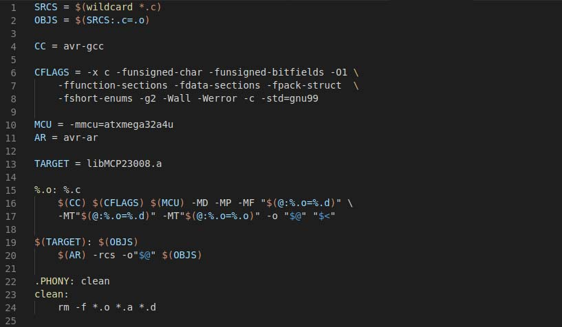

Blog: "Makefiles, but in English: Part 1"
description: Make is intelligent enough to be able to distinguish between them at runtime. But it's probably best to avoid storing different types in a variable.
date published: 2018-12-13 | date updated: 2018-12-18

In this multi-part series, I will be covering Makefiles and the general behavior of Make itself. The only real prerequisite knowledge needed is a general understanding of Bash and the common Bash builtins. We are going to cover variables, functions, builtins (variables and functions), rules, and recipes. By the time you are done with this series, you should have a confident grasp of Makefiles and have the ability to quickly get started with any project. However, before I get started I'd like to make a few points. First, this series is not intended to serve as a reference for Make. Instead, it will give you a basic understanding of how to get started and, more importantly, it will give you a set of keywords to supplement your googlefu. Secondly, the snippets and examples that follow are tested using GNU Make v4.1. There exist several different versions and indeed completely different implementations of Make. There may be slight syntax differences in these different versions and implementations of Make, but the keywords in this series should point you in the right direction.
Part 1a: Make Variables
Makefiles, at a very basic level, are more or less script files. They allow the
user to define functions, variables, they begin "execution" from the first line,
and continue until termination. To define a variable in a Makefile, simply
declare it with a name, followed by an assignment operator, followed by the
value. For example: FOO = BAR will define a variable named FOO, with the
value BAR. The actual value you set only becomes important in the context
which it is used. Syntactically speaking, there is no requirement that Makefile
variables be capitalized, but it immediately distinguishes them from functions
and builtins; to each their own.
Although Make variables behave similar to Environmental Variables, these values
are not globally set. For example, if you define some value FOO in your
makefile, you will not see that value present in your C file (unless you
explicitly instruct your compiler to). Similar to Bash, Make does not really
have a type system, a variable defined to a string can later be assigned to an
integer. Make itself is intelligent enough to be able to make the distinction
between them at runtime. That being said, it is probably best to avoid storing
different types in a variable.
There are a series of assignment operators in Make, and all of them behave slightly differently. Before I get into them, there is a concept which needs introducing, and that is expansion. If you are familiar with Bash and linux Environmental Variables, you should be familiar with the concept of expansion. Essentially, expansion is the evaluation of an assignment, whether it contains references to other variables or functions. Depending on the desired level of expansion, you can run into issues such as infinite recursion and infinite self-references. To address these issues, the authors of Make created different operators (actual operators in quotes to avoid confusion):
- "=": Variable assignment using recursive expansion.
- ":=" and "::=": "Simple" variable assignment using only a single level of expansion. This prevents infinite expansion or self reference. The difference between the single-colon and double-colon versions seems to be POSIX compliance, and does not work on older versions of Make.
- "?=": Conditional variable assignment operator. This assignment will only occur if the variable being assigned to does not already exist. This is helpful for creating defaults for values which can be passed on the command line. Note that an empty value does count as being defined in Make.
- "+=":
Append
assignment operator. This operator concatenates a space followed by the
assigned value.
FOO += baris the equivalent of sayingFOO := $(FOO) bar. Note that we are using:=for a self-reference, using=can cause issues.
Now that we can define variables, how do we refer to them in the rest of the
Makefile? Both variables and builtins are referred to using the $() operator,
for example:
FOO := foo
BAR := $(FOO) bar
If you were to echo BAR in this Makefile, you would find that it contains
foo bar. This shows not only variable reference, but Make's extremely simple
concatenation. Again, if you are familiar with Bash this should all be familiar.
Let's break down exactly how this works. First, we assign the value of FOO
using one level of expansion. The value we set is fixed, there are no variable
references or builtins to expand, it's simply set. BAR, on the other hand,
must expand the variable reference to FOO, get it's value, and concatenate "
bar" onto it. Note the space.
Part 1b, Make builtin functions
Calling functions
in Makefiles is similar to the way that variables are referenced, wih the $()
operator. This is true for both builtin functions, and user-defined functions,
however user-defined functions are slightly different. In a Makefile, it is
possible to define custom functions, but they are rarely used, so I will
primarily focus on using builtin functions. For the sake of brevity, I will not
be covering every single builtin available to you in Make, but I will cover how
they are used, and what kind of functions are available to you.
To call a function in Make, you first need to know the name of the function, and
the arguments which it accepts. The arguent system in Make is not so concrete as
you might expect, instead it differs slightly from function to function. For
instance, FOO := $(wildcard *.c) creates a variable called FOO and assigns
the value to the output of the
wildcard
function. This function outputs the names of all files in the current directory
which match the specified pattern. The wildcard is commonly used for automatic
source file detection in simple projects. Along with the wildcard function,
there are several other types of functions which are available in Make:
- Text Functions: General text manipulation functions. They can be used to do things like substitutions, pattern-based subsitutions, changing file extensions, etc
- Conditional Functions: Provide a mechanism to implement a structure of logic within the Makefile.
- File and File Name Functions: Provides the user with utilities to manipulate file names, and do simple file I/O
- Call Function: Allows the user to call user-defined functions.
This is not an exhaustive list, for the full list of builtin functions see this.
Part 1c, user-defined functions
Like some of the features in Make, user-defined functions exist to cover certain edge cases. You should not need them, but if you do you'll really need them. If you're familiar with C/C++ macros, then you will already be familiar with how Make user-defined functions work. The O'Rielly Make open book is a very good reference for user-defined functions. These functions must be defined on a single line, but the standard backslash notation will allow the user to split a function on to multiple lines.
define myfunction
echo "Hello, World!"
To call this function, you use the call builtin function, $(call myfunction)
This section is glossed over for a few reasons. Chances are if you're using a Makefile user-defined function you're probably Doing It Wrong™, it's already quite well documented in the linked book, and it's a fairly advanced feature of Make.